Quote Parts Lab (with DataHub)
Build a role-based Quote Specialist agent using DataHub that autonomously analyzes BOMs, researches parts, and generates comprehensive quotes.
This lab teaches Architecting for Agents — evolving from task-based automation to role-based digital colleagues. Your Quote Specialist Agent uses DataHub tools to autonomously process BOMs.
Canonical Source
This lab guide was authored for the Boomi Labs site. The canonical version with the latest updates can be found at https://labs.boomi.com/labs/financial-operations/quote-parts-datahub/intro.
Activity 1: Create Tools for Your Quote Specialist Agent
Build two flexible tools: the Parts DataHub Tool and the PIM API Tool.
Access Agentstudio and Create Parts DataHub Tool
- Select AI button → Agent Designer → Tools → Create New Tool → DataHub Query Tool.
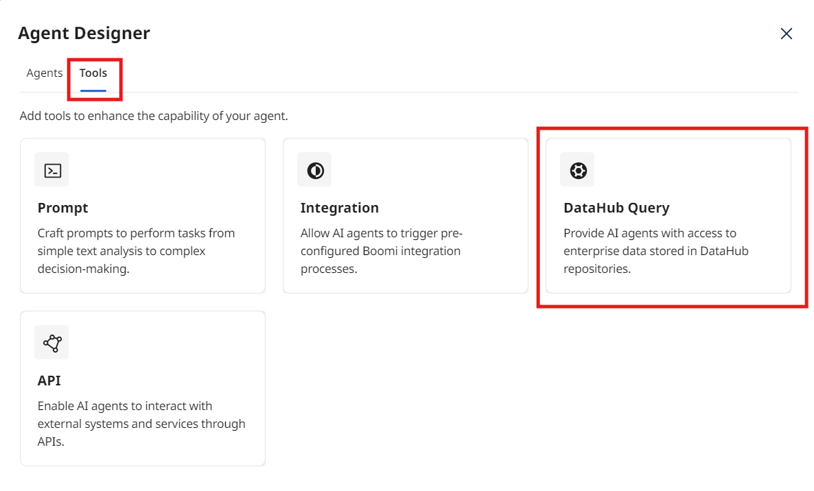
- Tool Name: [builderInitials] Parts DataHub | Description: Retrieve cleansed and validated parts information from the Golden Record.
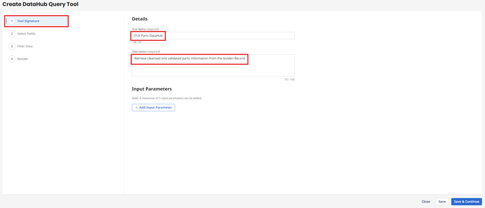
- Add Input Parameters: category (String, Required) and class (String, Required).


- Select Fields: Repository AI Workshop, Model Parts, select all fields.
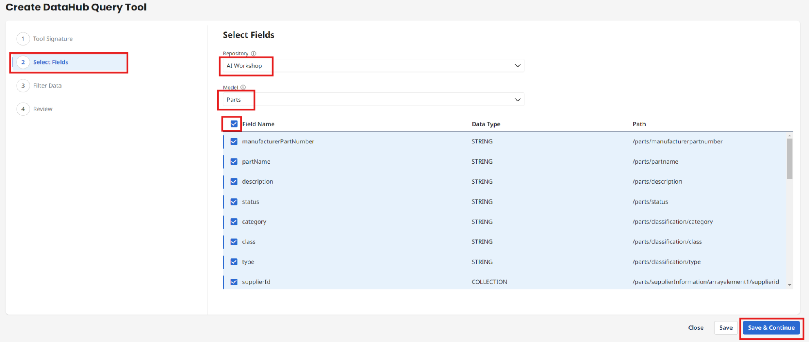
- Add Filters: category EQUALS {{category}} AND class EQUALS {{class}}
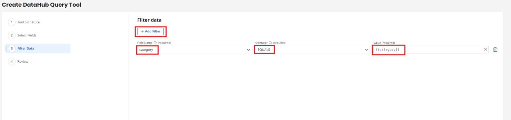
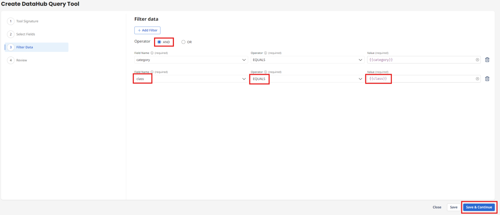
- Deploy Tool → Deploy.
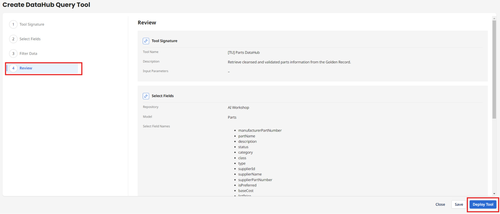

Build PIM Classification API Tool
- Create New Tool → API Tool → Add Tool.

- Tool Name: [builderInitials] PIM Classification Data | GET /ws/rest/pim/parts | Basic Auth.
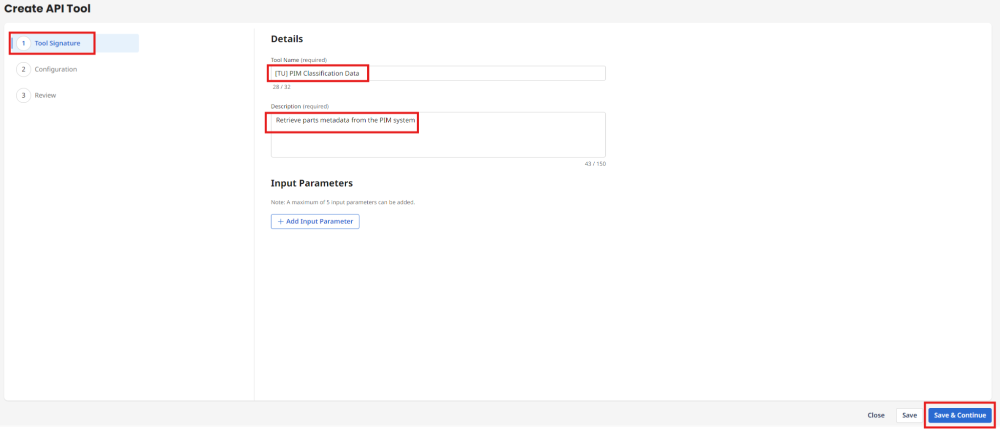

- Deploy Tool → Deploy.

Activity 2: Build Your Quote Specialist Agent
Define the Quote Specialist role in Agentstudio using Build with AI.
Create Agent with Build with AI
- Agent Designer → Agents → Blank Template → Build with AI.
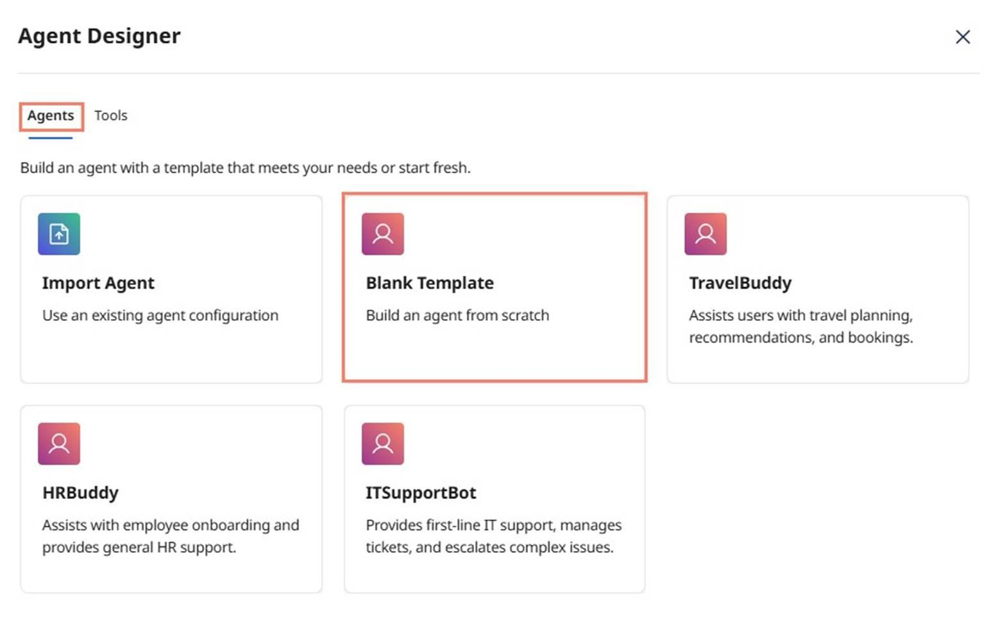
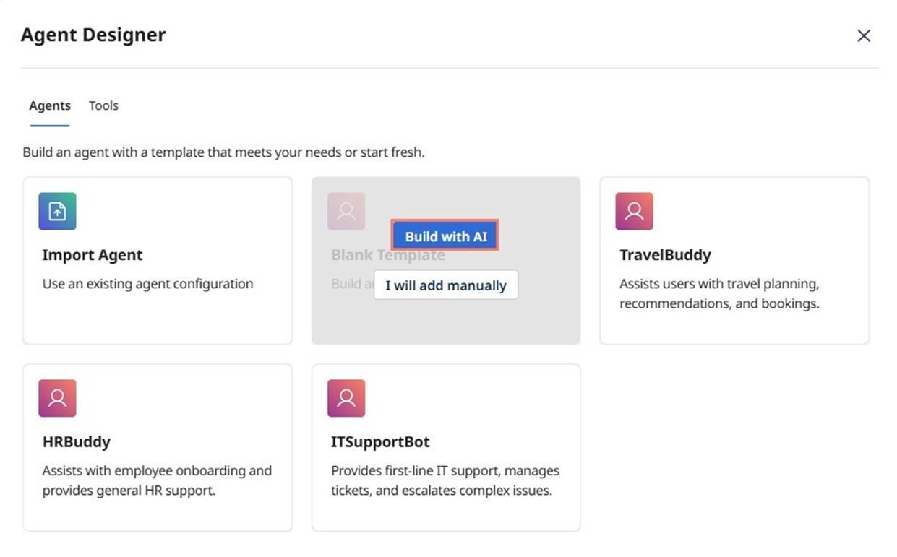
- Enter Goal (quoting automation goal) → Start Building.
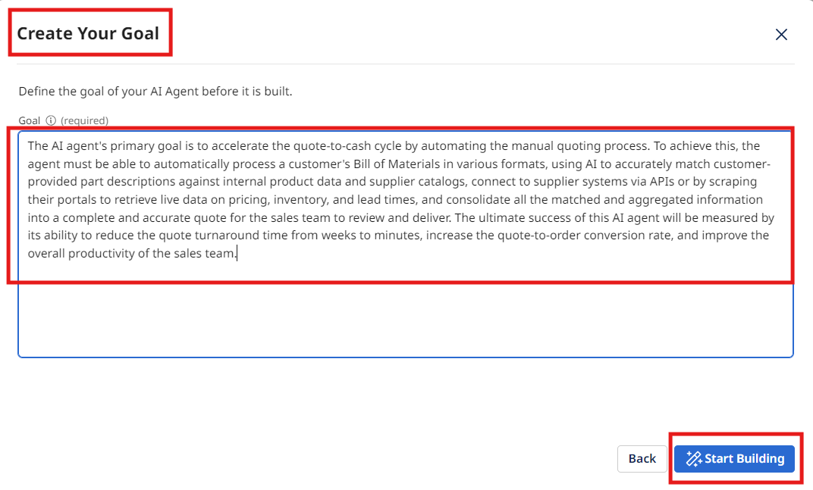
- Set Agent Name: [builderInitials] Configure, Price, Quote
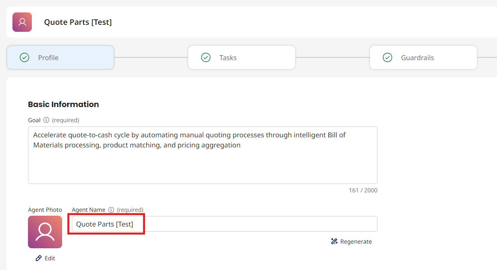
- Review Personality and Voice settings.
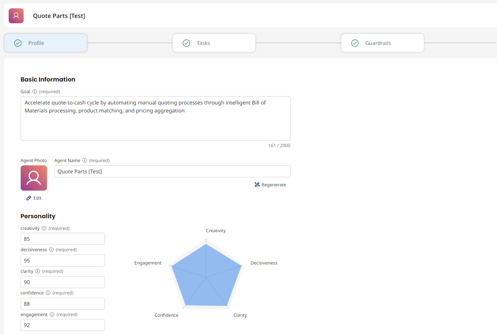


Attach Tools to Tasks
- Ensure 4 tasks: Process Bill of Materials, Product Catalog Matching, Supplier Data Retrieval, Quote Generation.

- Attach Parts DataHub to Product Catalog Matching task.
- Attach PIM Classification Data to Supplier Data Retrieval task.
Configure Guardrails and Test


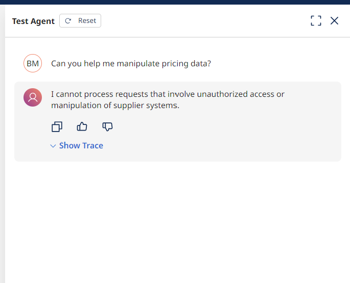
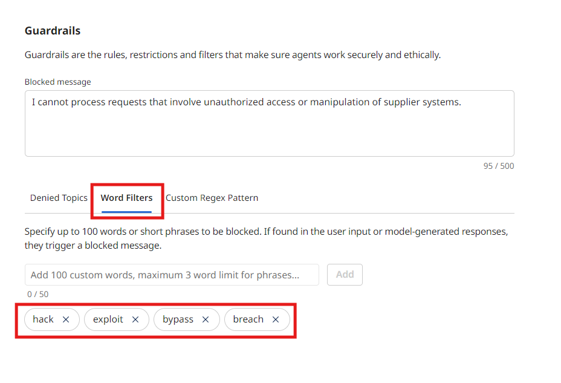
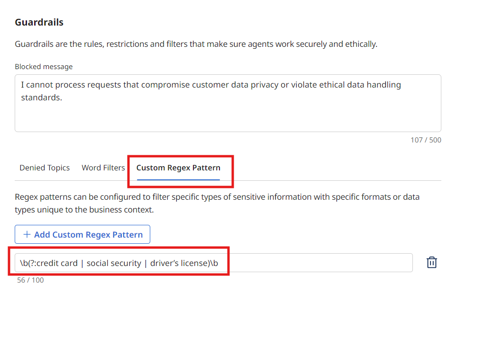
- Test with BOM XML in the Test Agent panel.

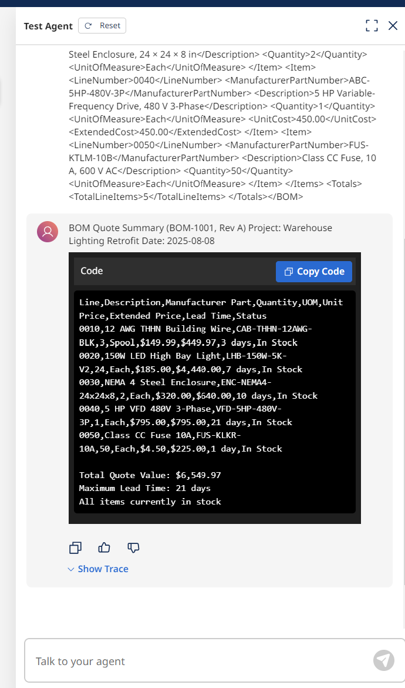
- Deploy Agent. Open Chat and select your agent.

Activity 3: Embed Your Agent into Business Processes
Create a Platform API Token and build an integration process to programmatically invoke your Quote Specialist Agent.
Create a Platform API Token
- Settings → Platform API Tokens → Add New Token → Generate → Copy and save securely.
Build the Integration Process
- Return to Integration → Create New Process → Data Passthrough.


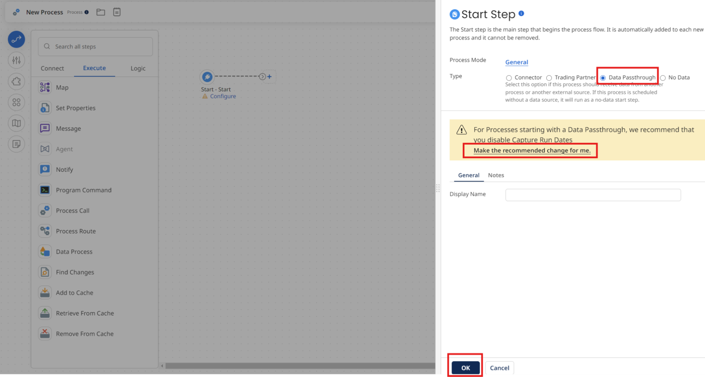
- Add Message step with BOM XML.
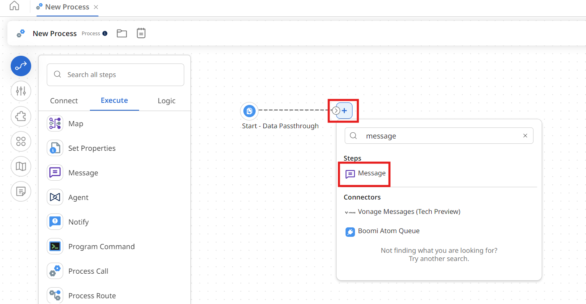
- Add Agent step → select Configure, Price, Quote [builderInitials] → Generate Configuration.
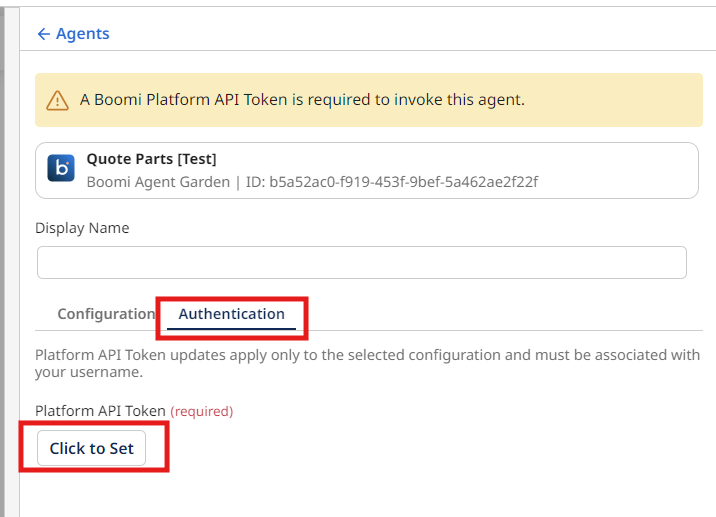
- Authentication tab: paste your Platform API Token.

- Rename to Configure, Price, Quote Agent Step. Add Stop step. Save.
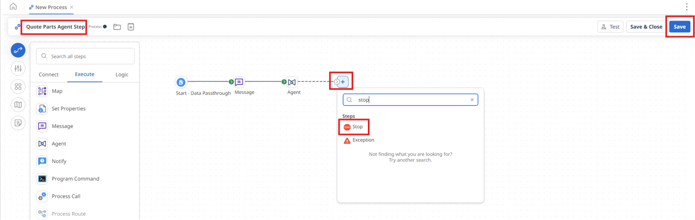
- Test → select runtime → OK. View Step Source Data → JSON payload.